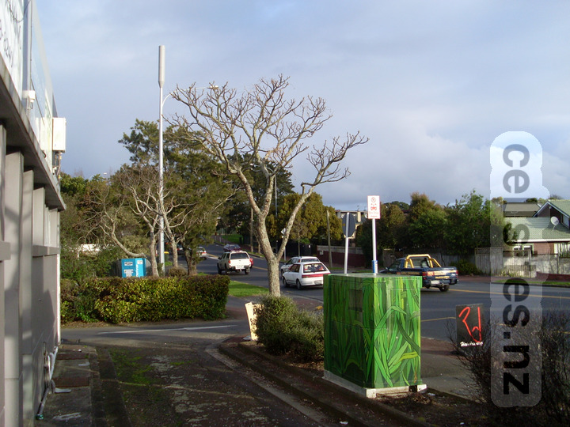
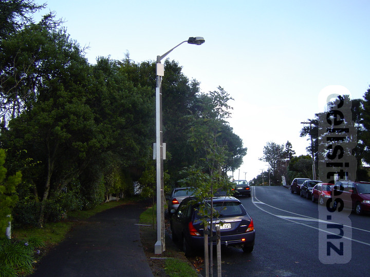
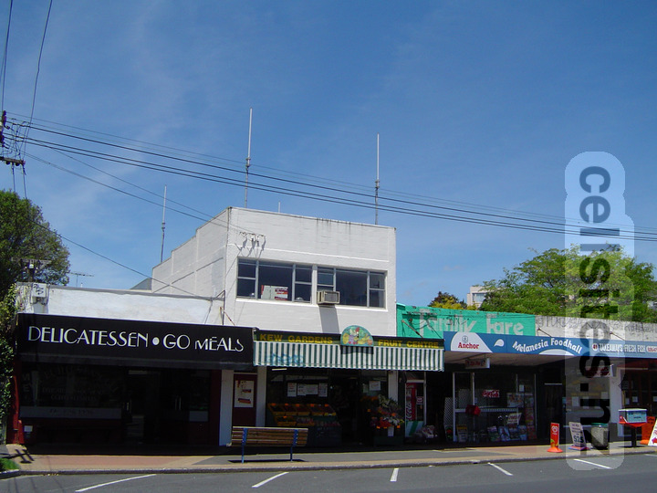
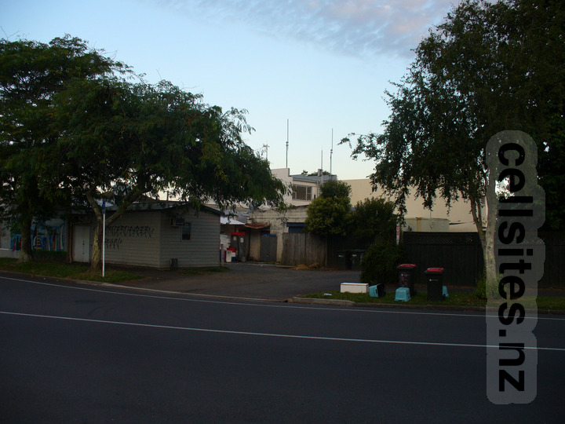
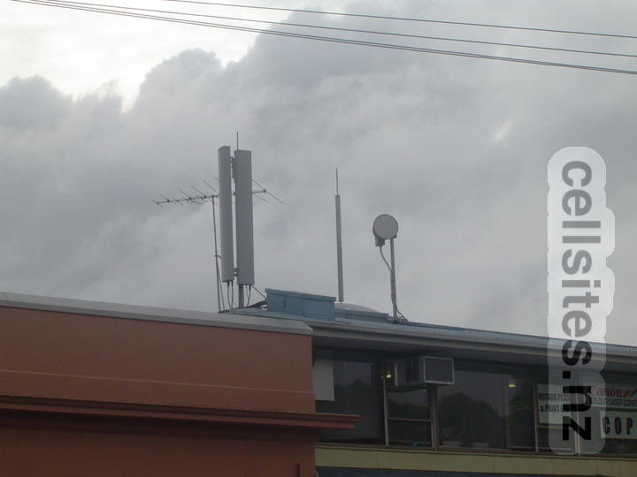
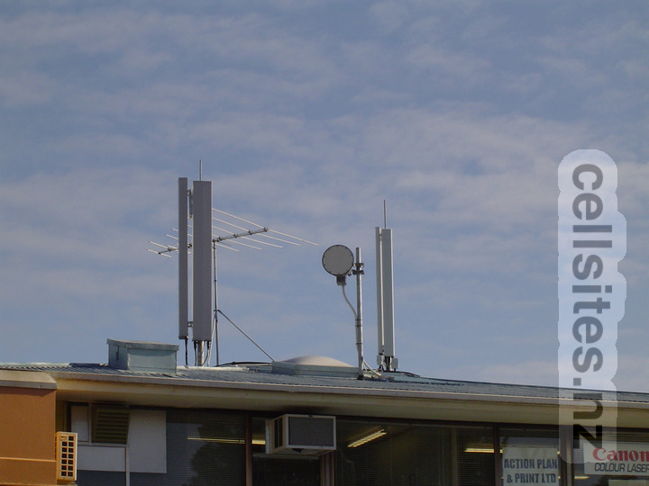
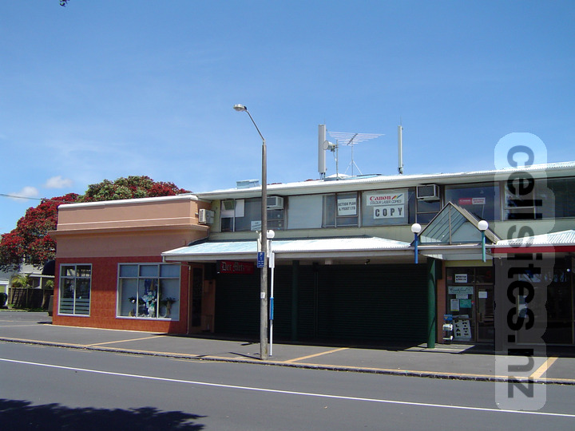

Vodafone established this as a UMTS only site to improve 2100 MHz coverage in the southern parts of Kohimarama ill-served by the main Kohimarama site located in the far north of the suburb. Around this time Vodafone also started expanding the practice of using landline backhaul rather than microwave—as seen by this site not having a microwave dish despite having microwave hubs nearby it could have linked into. Vodafone would later add GSM, LTE and NR services to this site. In the foreground, this site's cabinet can be seen with lovley artwork painted all over it. 2 September 2008.
Vodafone Grampian Road Microcell

Vodafone established this microcell site to provide GSM coverage to a small part of Kohimarama that did not receive sufficent GSM coverage from the main Kohimarama site. This is a rare example of Vodafone using a GSM microcell site to improve coverage—normally this type of GSM microcell sites were used to provide extra capacity in areas that already had good coverage such as the Pattteson Avenue microcell site in nearby Mission Bay. This site eventually become redundant due to the nearby Allum Street macro site now providing improved GSM services to the area served by this site (along with new technologies such as UMTS, LTE and NR). 5 June 2004..
Telecom Kohimarama

Telecom site with four omni-directional antennas for 850 MHz services. The author does not know whether all four were operated as one set—or if, for example, there was a pair was for CDMA and another for AMPS/TDMA. Onmi-directional antennas were very common on the Telecom mobile network in those days. These omni-directoinal antennas would later be replaced with sector panel antennnas for more capacity. 28 December 2004.An opposite view from the service road behind the shops. The top of the Telecom equipment shelter can be seen, with the GPS cone antenna (required for CDMA services) clearly seen indicating this site provided CDMA services. 28 December 2004.

Some years later some new metalwork and equipment appeared. It turned out to be the foundations being laid for 2degrees which would launch about a year and a half later. 31 December 2007.
Vodafone Kohimarama

The pair of antennas on the left is for GSM 900 services. This site is unusual for a sectorised in having only two sectors—owing to it being located at the north-west extermity of the Kohimarama valley so only two sectors are required pointing East and South. The pole on the right would later receive another pair of antennas for UMTS 2100 services. The microwave dish points towards the Glendowie microwave hub. I suspect the poor location of this site was constrained by needing line-of-sight to another microwave site, to avoid having to backhaul over a Telecom landline circuit. 3 June 2004.

Taken only a month after the previous photo, this shows two brand new UMTS 2100 antennas. However the old microwave dish still remains, which was later replaced with a higher capacity dish to support the higher bandwidth requirements of UMTS services. Vodafone would launch their UMTS service the following year. 5 July 2004.

No changes seen a few months later, but this shot shows more of the site's surroundings. 28 December 2004.